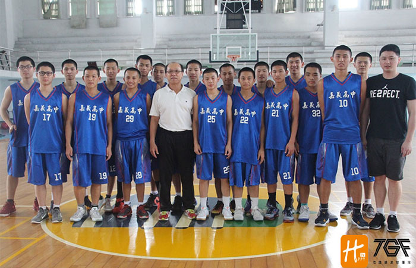

貼文時間：2017/06/04

乙級列強嘉義高中，八度闖進全國決賽，近五年來更是四度闖入全國八強，隊史最佳紀錄為全國乙級第四名，是每年乙級聯賽不可忽視的隊五。在嘉義高中，人人皆兵，團隊氣氛更是奪勝關鍵。
嘉義高中體育館，黑板上大大的寫著成功七招，成穩、細心、膽識、大度、誠信、擔當、內涵，簡短的字，蘊含著不凡的期待，這課題難啊難，考驗著球員更考驗著教練。每個禮拜黑板上的字總不同，問到球員那些字有沒有重複過，他們笑著說：教練那麼博學多聞，我們從未看到重複的。
校方對球隊的資源投入更是了得。除了校內泳池的使用，來到重量訓練室，有著琳瑯滿目的器材，而球場旁更是有著高科技的TRX懸吊式阻抗訓練器。對肌肉整體的激活效果比在平面上施行肌力訓練來的好。在這個環境下，球員們身體素質將會大幅提升，對抗性也會有所成長。
今年的嘉中戰績雖未如往年理想，但陣中主力球員有四名才高二，分別是熱血隊長伍鈺龍、得分手林坤田、內線台柱吳洪兒、射手洪嶼傑。這幾位球員各有優缺點，在場上各司其職，已經培養了二年經驗。相信在明年的賽場，能看見他們更加成熟的球風與實力。
潘義坤總教練把每個孩子當成自家小孩般的照顧，身兼母職親自為孩子們墩補品...家鄉口味水餃，滷味就是潘教練對這群孩子們的疼愛。只為了讓球員們能在好環境裡成長，球員們總讚不絕口教練的好手藝，滿滿的家鄉味吃入口中暖進心中，更促進球場上的表現。
此外，"熱忱"與"基本"。是潘教練挑選球員的兩大條件，沒有熱忱，你不會有所進步的；沒有基本動作體能，硬跟著球隊打不到球，那不如發揮你所長，選擇其他學校快樂打球吧～
教練更表示：「你不放棄我，我就不會放棄你。」在我這，我一定好好栽培球員。談笑間，我們問到教練對明年度的目標，教練笑著說：「明年最大希望是上電視」，但比起上電視，教練堅定的眼神更訴說著明年，我們將重返榮耀！
炎熱夏日，汗水淋漓，他們依然咬著牙訓練著，早上練球，晚上讀書，球技課業樣樣兼顧的他們，十分令人感動。想必明年的他們會展現更高層次的企圖心，來征服個個阻擋者，來自嘉義的黑色風暴，我們拭目以待。